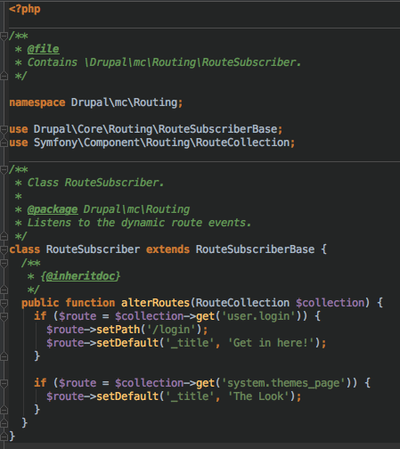
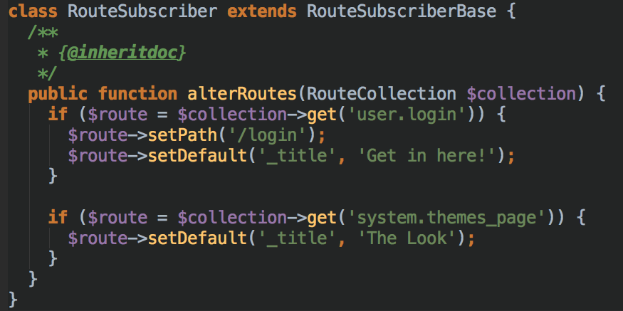
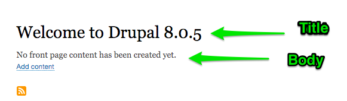
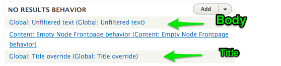

#MidCamp
Custom Modules: How We Do It in Drupal 8 /
Scott Weston
Custom Modules
How we do it in Drupal 8
MidCamp 2016
#MidCamp
Code and Slides: github.com/nodeloophole
Scott Weston
Duo Consulting
Director of Development
https://duoconsulting.com
@NodeLoophole
Code and Slides
https://github.com/nodeloophole
Session Purpose
To provide you with code examples comparing common tasks in Drupal 7 and their equivalent in Drupal 8.
Session Format
- Review each topic in Drupal 7
- Show code examples in Drupal 8
Topics Covered
- HTML Tables
- Lists
- Links
- Overriding page titles and local tasks
- Creating nodes programmatically
- Editing nodes programmatically
- Query for nodes using entityQuery
- Setting up cron tasks
- Getting nodes from Views result
- Create a menu link
- Create a block
Use Drupal Console!
Using Drupal Console will make your life easier for so many things..
- Generating modules, controllers, services, etc.
HTML Tables
HTML Tables
Drupal 7
- Built out as an array of arrays
- header
- rows
- Output using:
$content = theme('table', array('header' => $header, 'rows' => $rows));
return $content;
HTML Tables
Drupal 8
- Similar structure to Drupal 7 as far as header and rows
- The render array is different
$content[] = [
'#theme' => 'table',
'#header' => $header,
'#rows' => $rows,
];
return $content;
HTML Tables
More Information
Lists
Lists
Drupal 7
An array of items is passed to theme('item_list',...)
// Simple unordered list
$items = array(
'Item 1',
'Item 2',
'Item 3',
);
$list = theme('item_list', array(
'title' => t('Unordered List'),
'items' => $items
));
Lists
Drupal 8
Feels similar - Create a renderable array
$fruits = [
'Apple',
'Banana',
'Fig',
'Mango',
'Orange'
];
$content[] = [
'#theme' => 'item_list',
'#items' => $fruits,
'#title' => t('Some Fruits'),
'#list_type' => 'ol',
'#attributes' => [
'class' => ['class-1', 'class-2']
]
];
Lists
Nested lists - put sub-items in 'children'
$apples = [
'Gala',
'Fuji',
'Golden Delicious',
];
$fruits = [
[
'#markup' => 'Apple',
'children' => $apples,
],
'Banana',
'Fig',
'Mango',
'Orange'
];
$content[] = [
'#theme' => 'item_list',
'#items' => $fruits,
'#title' => t('Some Fruits'),
'#list_type' => 'ol',
'#attributes' =>[
'class' => ['class-1', 'class-2']
]
];
Links
Links
Drupal 7
l($title, $url, $options);
Links
Drupal 8
l();is deprecated, avoid using.- Lots of ways to build links, no clear consensus
1. Link as part of HTML Code
$output .= '
' . t('The Database Logging ... the Recent log messages ...',
[':dblog' => \Drupal::url('dblog.overview')]) . '
';
$url = (new Url('system.db_update', array('op' => 'run')))
->setOption('base_url', $base_url);
$build['link'] = [
'#type' => 'link',
'#title' => $this->t('Apply pending updates'),
'#attributes' => [
'class' => ['button', 'button--primary']
],
'#weight' => 5,
'#url' => $url,
];
3. Instantiate a new Link
use Drupal\Core\Link;
use Drupal\Core\Url;
...
$link = new Link($text, $url);
*Creates a Link object
4. Using Link::createFromRoute()
Link::createFromRoute();
*Creates Link object
5. Using Link::fromTextAndUrl()
Link::fromTextAndUrl();
*Creates a Link object
Link Object
Options
- $Link->toRenderable() to generate a render array
- $Link->toString() to generate <a href="/path">...</a>
Overriding Page Titles and Routes
Override Titles / Tabs
Drupal 7
hook_menu_alter(); for both page titles and local tasks
Overriding Page Titles and Routes
Route information created by another module can be overridden by a RouteSubscriber.
What is a Route?
A route is a path which is defined for Drupal to return some sort of content.
/user/login
/node
/node/123
What is a Route Subscriber?
A type of Event Subscriber that listens for RoutingEvents::ALTER. This is where other modules can alter existing routes.
Analogous to hook_menu_alter() in Drupal 7
How to Alter a Route
- Create a file at /modules/{module}/src/Routing/RouteSubscriber.php
- Add a class that extends RouteSubscriberBase
- With a method alterRoutes
- Make the desired changes
- Add info to {module}.services.yml
Hint: USE DRUPAL CONSOLE
Route Subscriber File
Route Subscriber File
Bonus Tip: Homepage Title
If there's no content on the default homepage, edit the NO RESULTS html in view: homepage, display: page_1

Overriding Local Task (Tab) Titles
In Drupal 7, this was done in hook_menu_alter();
In Drupal 8, hook_local_tasks_alter(&$local_tasks)
Overriding Local Task (Tab) Titles
Steps
- Find route (using webprofiler, etc.)
- Create hook_local_tasks_alter() fuctnion
$local_tasks['system.theme_settings']['title'] = t('Foo');
Creating Nodes Programmatically
Creating Nodes Programmatically
Drupal 7
$node = new stdClass();
// Add info/field data to the node
$node->type = 'page';
$node->status = 1;
$node->uid = 1;
$node->title = t('Clever Node Title');
$node->body[LANGUAGE_NONE][0]['value'] = "Node body text.";
// Let Drupal sprinkle some magic on the class.
node_object_prepare($node);
// Save the node.
node_save($node);
Creating Nodes Programmatically
Drupal 8
public function __construct() {
// Hey Drupal, I want to play with nodes!
$this->NodeStorage = \Drupal::entityTypeManager()->getStorage('node');
}
public function generate($nodeCount = 1) {
for ($i = 1; $i <= $nodeCount; $i++) {
// Create an array for the node
$node_fields = [
'title' => t('Press Release :i of :nodeCount', [
':i' => $i,
':nodeCount' => $nodeCount
]),
'body' => 'this is some body text',
'status' => 1,
'type' => 'press_release',
'promote' => 1,
'langcode' => 'en',
];
// Create a node object from the array.
$node = $this->NodeStorage->create($node_fields);
// Save the node.
$this->NodeStorage->save($node);
}
}
Editing Nodes Programmatically
Editing Nodes Programmatically
Drupal 7
function _mc_edit_node() {
// Load the node you want to edit.
$node = node_load(1);
// Make changes to the node object.
$node->title = t('New Node Title');
// Save the node.
node_save($node);
}
Editing Nodes Programmatically
Drupal 8
$node = \Drupal\node\Entity\Node::load($nid);
$node->set($field_name, $field_value);
$node->save();
Querying for Nodes
Querying for Nodes
Drupal 7
EntityFieldQuery (the most Drupaly Way)
// Going to use an EntityFieldQuery to get the nodes I want.
$query = new EntityFieldQuery();
$query->entityCondition('entity_type', 'node', '=')
->entityCondition('bundle', 'article', '=')
->propertyCondition('status', 1, '=');
$query->fieldCondition('field_state', 'IL', '=');
$query->addMetaData('account', user_load(1));
$result = $query->execute();
Querying for Nodes
Drupal 8
\Drupal::entityQuery
$query = \Drupal::entityQuery('node')
->condition('type', 'press_release')
->condition('field_counter', 3, '>')
->condition('status', 1);
$result = $query->execute();
Cron Tasks
Cron Tasks
Identical between Drupal 7 and 8.
Put hook_cron(); in the .module file.
/**
* Implements hook_cron().
*/
function mc_cron() {
// Do your stuff here.
// Log this running in Recent Log Messages
\Drupal::logger('midcamp')->notice('Midcamp cron ran');
}
Get Nodes from Views Result
Get Nodes from Views Result
Drupal 7
// Load the view
$view = views_get_view('latest_press');
// Execute the view's default display
$view->execute('default');
// There's now a $view->result array which has the info about the
// nodes in the view result.
$nids = array();
foreach ($view->result as $key => $data) {
$nids[] = $data->nid;
}
Get Nodes from Views Result
Drupal 8
// Load the view
$view = Views::getView('latest_press_releases');
// Execute the view
$view->execute('page_1');
// Make an item list of out the nids of the results
$items = [];
foreach ($view->result as $result) {
$items[] = $result->nid;
}
$content[] = [
'#theme' => 'item_list',
'#items' => $items,
'#title' => t('Nodes in this Views result'),
];
Create Menu Link
Create Menu Link
Drupal 7
/**
* Implements hook_menu().
*/
function mc_menu() {
$items = array();
$items['mc/view-nids'] = array(
'title' => 'Drupal 7 - Get View Nodes',
'page callback' => '_mc_view_nids',
'access arguments' => array('access content'),
// Machine name of the menu in which the link should appear.
'menu_name' => 'user-menu',
);
return $items;
}
Create Menu Link
Drupal 8
In mc.links.menu.yml file
mc.press_releases:
title: 'Latest Press'
route_name: view.latest_press_releases.page_1
menu_name: main
Creating Blocks
Creating Blocks
Drupal 7
hook_block_info();
hook_block_view($delta);
Creating Blocks
Drupal 8
Create a Block Plugin
namespace Drupal\mc\Plugin\Block;
use Drupal\Core\Block\BlockBase;
use Drupal\Core\Link;
use Drupal\Core\Url;
/**
* Provides a 'LinksBlock' block.
*
* @Block(
* id = "links_block",
* admin_label = @Translation("Links block"),
* )
*/
class LinksBlock extends BlockBase {
/**
* {@inheritdoc}
*/
public function build() {
$build = [];
$items = [];
$items[] = Link::fromTextAndUrl('Table', Url::fromRoute('mc.table_controller_generateTable'))->toString();
$items[] = Link::fromTextAndUrl('Lists', Url::fromRoute('mc.list_controller_generateLists'))->toString();
$items[] = Link::fromTextAndUrl('Links', Url::fromRoute('mc.link_controller_generateLinks'))->toString();
$build[] = [
'#theme' => 'item_list',
'#items' => $items,
'#title' => t('MidCamp Links'),
'#list_type' => 'ul',
];
return $build;
}
}
Blocks Session
Building "Blocks" of Drupal 8
Time: Saturday, 4:00pm - 5:00pm
Room: SRH 219 - Breakthrough Technologies
Speakers: @ameeuwsen
Questions?
MidCamp Sprint
Sunday, March 20 at 10 am
UIC COMRB 909 S. Wolcott St
(across the street from the venue)
Contributors of all skill sets and levels are welcome and encouraged to join us!